数值积分与数值微分
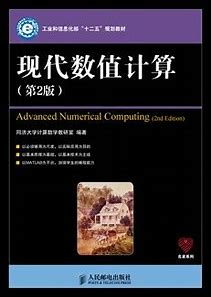
数值积分
1. 引言
高数中计算积分思路基本是牛顿莱布尼兹法:
实际计算中,原函数一般无法求出.给不出解析解,只能求出数值解.
设在区间 [a,b], (不妨先设 a,b 为有限数 ) 上 ,
如果
2. 几个常用积分公式及其复合公式
- 中点公式
对f(x),使用
误差估计:
- 梯形公式
拉格朗日插值多项式
基于
误差估计:
- 辛普森 (Simpson) 公式(抛物型公式)
可以得到积分公式:
误差估计:
2.1 求积公式
回顾以上三个积分公式,可以看出:一般地 , 若已知函数 f(x) 在区间 [a,b] 内节点
的式子为求积公式 , 其中
记
2.2 代数精度
定义 5.2.1 如果对所有次数小于等于 m 的多项式 f(x), 等式
成立 , 但对某个次数为 m + 1 的多项式 f(x),等式不精确成立 , 则称求积公式 (5.8) 的代数精度为 m 次
代数精度适用于判断求积公式好坏的标准之一.如何计算公式代数精度如下做法:
- 以中点公式为例
中点公式的误差估计(余项)为
所以,中点公式的代数精度为
- 另一种方式
将
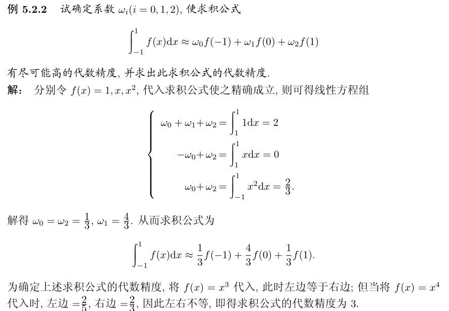
2.3 复合积分
在通常情况下 , 积分区间 [a,b] 的长度 b−a 不是非常小 , 因此为了确保计算精度 , 通常采用复合求积公式
复合积分 , 就是将积分区间分为若干份 , 在每一个 " 小区间 " 上用低阶求积公式 (1),(2) 或 (3) 进行计算 , 再将计算值相加即得原积分的近似值
将积分区间 [a,b] 分为 n 等分 , 记步长
当n取值足够大,即
- 复合中点公式
- 复合梯形公式
- 复合辛普森公式
三个公式的误差余项分别为:
2.4 常用积分公式的python实现
6种常用积分公式的python实现如下:
# -*- coding: utf-8 -*-
# 数值计算方法实现(python)
import numpy as np
from typing import List, Tuple,Union
### y = 4/( 1+x^2 )
# f= lambda x: 4/( 1+x**2 )
def MidPointInteg1d(f, a:float, b:float)->float:
"""一维中点积分公式"""
return (b-a)*f((a+b)/2)
def ComMidPointInteg1d(f, a:float, b:float, n:int)->float:
"""一维复合中点积分公式"""
h=(b-a)/n
x=np.linspace(a+0.5*h,b-0.5*h,n)
return h*sum([f(xi) for xi in x])
def trapezoidInteg1d(f, a:float, b:float)->float:
"""一维梯形积分公式"""
return (b-a)*(f(a)+f(b))/2.0
def ComtrapezoidInteg1d(f, a:float, b:float, n:int)->float:
"""一维复合梯形积分公式"""
h=(b-a)/n
# x_i (i=0,1,...,n)
x=[a+i*h for i in range(n+1)]
return 0.5*h*(-f(a)-f(b)+2*sum([f(xi) for xi in x]))
def SimpsonInteg1d(f, a:float, b:float)->float:
"""一维 Simpson 积分公式"""
return (b-a)*(f(a)+4*f((a+b)/2.0)+f(b))/6.0
def ComSimpsonInteg1d(f, a:float, b:float, n:int)->float:
"""一维复合 Simpson 积分公式"""
h=(b-a)/n
# x_i (i=0,1,...,n)
x=[a+i*h for i in range(n+1)]
t1=sum([f(0.5*(x[i]+x[i+1])) for i in range(0,n)])
t2=sum([f(x[i]) for i in range(1,n)])
return (h/6.0)*(f(a)+f(b)+4*t1+2*t2)
def integ1d(f:object,
a:float,
b:float,
**kwargs)->float:
"""一维数值积分"""
if kwargs['method']==1:
return MidPointInteg1d(f, a, b)
if kwargs['method']==2:
return trapezoidInteg1d(f, a, b)
if kwargs['method']==3:
return SimpsonInteg1d(f, a, b)
def ComInteg1d(f,
a:float,
b:float,
n:int,
**kwargs)->float:
"""一维复合积分"""
if kwargs['method']==1:
return ComMidPointInteg1d(f, a, b, n)
if kwargs['method']==2:
return ComtrapezoidInteg1d(f, a, b, n)
if kwargs['method']==3:
return ComSimpsonInteg1d(f, a, b, n)
def showError(Numerical:float, Exact:float)->None:
"""显示误差"""
print(f"数值解: {Numerical}, 精确解: { Exact}, 误差: {0.01*(Exact-Numerical)}%")
验证:
# f(x)=e^(-x)
f=lambda x: np.exp(-x)
accVal=0.6321
# 积分范围
a,b=0,1
# 计算积分
integ1=integ1d(f,a,b,method=1)
integ2=integ1d(f,a,b,method=2)
integ3=integ1d(f,a,b,method=3)
print(f"中点积分:{integ1}")
showError(integ1,accVal)
print(f"梯形积分:{integ2}")
showError(integ2,accVal)
print(f"Simpson积分: {integ3}")
showError(integ3,accVal)
输出:
中点积分:0.6065306597126334
数值解: 0.6065306597126334, 精确解: 0.6321, 误差: 0.0404514163698253
梯形积分:0.6839397205857212
数值解: 0.6839397205857212, 精确解: 0.6321, 误差: -0.08201189777839135
Simpson积分: 0.6323336800036626
数值解: 0.6323336800036626, 精确解: 0.6321, 误差: -0.0003696883462468591步长数目越多,误差越小.
f2= lambda x: x*np.exp(-1*x)*np.cos(2*x)
# 积分范围
a,b=0,2*np.pi
n =[2**i for i in range(9)]
extract=-0.122122499
e1,e2,e3=[],[],[]
# 复合积分计算
for ni in n:
integ_mid=ComInteg1d(f2,a,b,ni,method=1)
integ_trap=ComInteg1d(f2,a,b,ni,method=2)
integ_simpson=ComInteg1d(f2,a,b,ni,method=3)
e1.append(abs(integ_mid-extract))
e2.append(abs(integ_trap-extract))
e3.append(abs(integ_simpson-extract))
from matplotlib import pyplot as plt
plt.plot(np.log10(n),np.log10(e1),label='Midpoint')
plt.plot(np.log10(n),np.log10(e2),label='Trapezoidal')
plt.plot(np.log10(n),np.log10(e3),label='Simpson')
plt.xlabel('Log_10(n)')
plt.ylabel('Log_10(Error)')
plt.legend()
plt.show()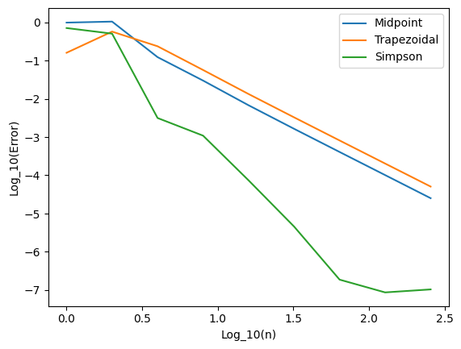
3. 变步长方法与外推加速技术
复合中点公式、梯形公式以及辛普森公式都是有效的求积方法 , 步长 h 越小 , 计算精度越高 . 但在实际运用上述求积公式进行计算时须事先选取一个合适的步长 h,**因此在给定计算精度的情形下 , 往往通过不断调整步长的方式进行计算 **
- 变步长梯形法
在实际计算中往往会采用让步长逐次折半的方式 , 反复使用复合求积公式进行计算 , 直至相邻两次计算结果之差的绝对值小于给定的计算精度为止 . 这种方法即称为变步长算法
变步长梯形方法的优点是算法简单 , 编程容易 ; 缺点是收敛速度较慢
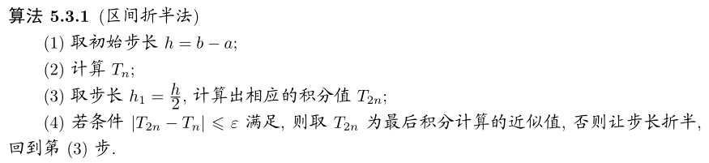
Python代码实现
def VarStepInteg1d(f, a:float, b:float,precision:float=1e-5,
**kwargs)->float:
"""一维变步长积分"""
k=0
Tn=ComInteg1d(f, a, b, 1, method=kwargs['method'])
print(f"第0次积分, 步长: {(b-a)/(2**k)}, 结果: {Tn}")
while True:
k+=1
T2n=ComInteg1d(f, a, b, 2**k, method=kwargs['method'])
print(f"第{k}次积分, 步长: {(b-a)/(2**k)}, 结果: {T2n}")
if abs(T2n-Tn)<=precision:
print(f"精度要求达到, 迭代次数: {k}, 步长: {(b-a)/(2**k)}")
return T2n
else:
Tn=T2n
f3=lambda x: np.sin(x)/x if x!=0 else 1
# 积分范围
a,b=0,1
# 计算积分
VarStepInteg1d(f3,a,b,1e-7,method=2)
# 输出:
# 第0次积分, 步长: 1.0, 结果: 0.9207354924039483
# 第1次积分, 步长: 0.5, 结果: 0.9397932848061772
# 第2次积分, 步长: 0.25, 结果: 0.9445135216653895
# 第3次积分, 步长: 0.125, 结果: 0.9456908635827014
# 第4次积分, 步长: 0.0625, 结果: 0.945985029934386
# 第5次积分, 步长: 0.03125, 结果: 0.9460585609627681
# 第6次积分, 步长: 0.015625, 结果: 0.946076943060063
# 第7次积分, 步长: 0.0078125, 结果: 0.9460815385431518
# 第8次积分, 步长: 0.00390625, 结果: 0.9460826874113473
# 第9次积分, 步长: 0.001953125, 结果: 0.9460829746282345
# 第10次积分, 步长: 0.0009765625, 结果: 0.9460830464324462
# 精度要求达到, 迭代次数: 10, 步长: 0.0009765625- 外推加速技术与龙贝格求积方法
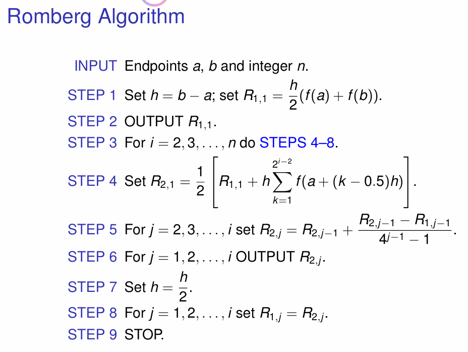
4. 牛顿-科茨公式(Newton-Cotes formula)
中点公式、梯形公式及辛普森公式可分别看成是 f(x) 用常数、线性插值函数和抛物型插值函数代替再积分所得 . 若将此想法进一步推广 , 将 f(x) 用 n + 1 个等距节点上的 n 次拉格朗日插值多项式代替 , 即得所谓的牛顿–科茨 (Newton-Cotes) 公式.
设
求积系数
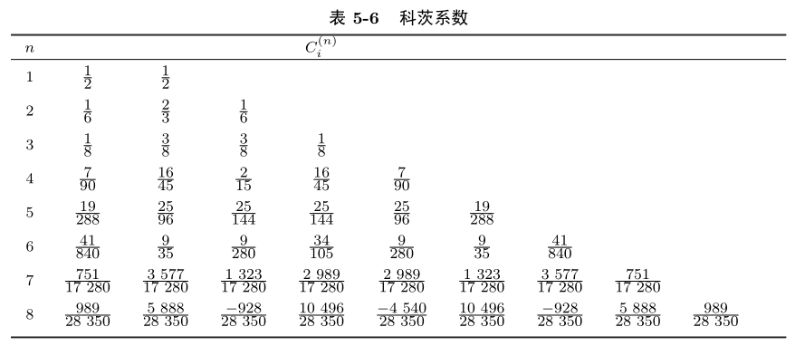
n > 8 时科茨系数有正有负 , 此时对应的求积公式的稳定性得不到保证 . 且由于对高次插值多项式来说 , 收敛性一般不成立 , 故在实际计算中一般不采用高阶的牛顿 – 科茨公式(n > 8).
定理5.4.1: 当 n 为奇数时 , 牛顿 – 科茨公式 (5.23) 的代数精度至少为 n 次 ; 而当 n 为偶数时 , 代数精度至少为 n + 1 次 .
该求积公式是稳定的.而当n>7时,由于求积系数,有正有负,因此稳定性一般不成立,收敛性一般也不成立.因此对高阶牛顿科茨公式,
牛顿 – 科茨公式误差
尽管它具有较高的代数精度,一般不采用.常用的是中点公式、梯形公式和抛物型公式的复合求积公式以及下节的采用非等分节点的高斯(Gauss)公式
NEWTON-COTES公式的PYTHON实现
def Integ1dNewtonCotes(f,a:float,b:float,n:int)->float:
"""给定n(>=1)个点,计算一维牛顿-科特斯积分"""
if n<=0:
raise ValueError("牛顿-科特斯积分时,n最小值为1")
weights=NewtonCotes_weights(a,b,n)
h=(b-a)/n
x=[a+i*h for i in range(n+1)]
return sum([weights[i]*f(x[i]) for i in range(n+1)])
# check ok
def NewtonCotes_factor(i:int,n:int)->float:
"""计算牛顿-科特斯积分的第i个权重"""
import math
import numpy as np
def f(t:float):
s=1.0
for j in range(n+1):
if j==i:
continue
s=s*(t-j)
return s
t1=((-1)**(n-i))/(n*math.factorial(i)*math.factorial(n-i))
t2=Integ1dGuassLegendre(f,0,n)
return t1*t2
def NewtonCotes_weights(a:float,b:float,n:int=10)->List[float]:
"""计算牛顿-科特斯积分的权重数组"""
weights=[(b-a)*NewtonCotes_factor(i,n) for i in range(n+1)]
return np.array(weights)5. 高斯公式(Gauss formula)
考虑带权函数的求积公式:
其中函数
定义:若对于节点
高斯公式可看成是 f(x) 用高斯点上的n次插值多项式代替所得积分值 . 下面给出了确定高斯点的一种求解方法
定理5.5.2
x_i (i = 0,1,··· ,n) 是求积公式 (7) 的高斯点的充分必要条件是 : 多项式\Pi(x)=\prod_{i=0}^n(x-x_i) 与任意次数不超过 n 的多项式 q(x) 关于权函数 ρ(x) 正交:\int_a^b\rho(x)\Pi(x)q(x)\mathrm{d}x=0.
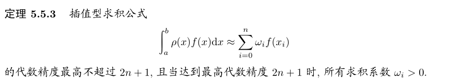
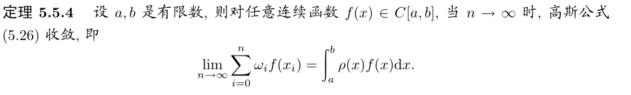
5.1 常用的高斯型公式
高斯 – 勒让德公式
令
n=0时:
n=1时:
n=2时:
对于一般区间[a,b]的积分,需要先变换积分区间,然后使用高斯-勒让德公式计算.
其中,
常用的高斯点及高斯系数表:
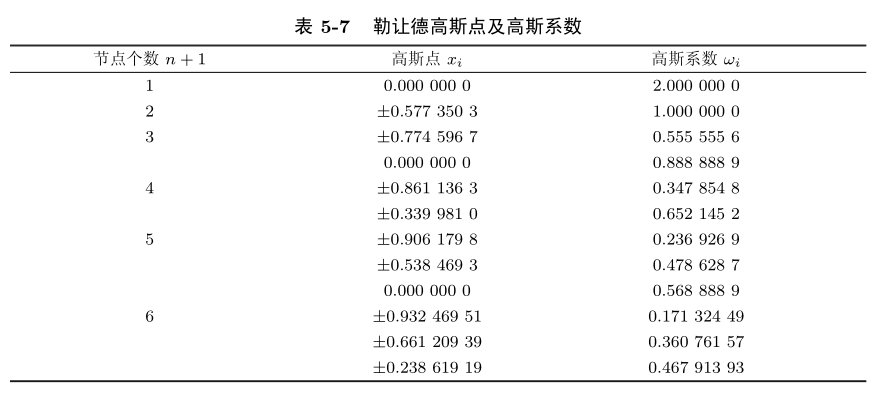
高斯 – 切比雪夫公式
令
积分区间为[-1,+1]的高斯–切比雪夫公式为:
n=2时:
高斯 – 拉盖尔公式
令
高斯 – 拉盖尔积分公式为:
n=0时:
n=1时:
n=2,3,4时的高斯点和高斯系数:
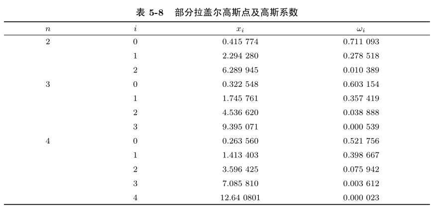
- 公式变换
对于形如
$ x=\frac{1}{\beta}t+\alpha $
对于形如
高斯 – 埃尔米特 (Gauss-Hermite) 公式
令
此时求积公式为:
n = 1 时的高斯 – 埃尔米特公式为
n = 2 时的高斯 – 埃尔米特公式为
高斯 – 埃尔米特公式的另一形式如下,g(x)需要保证广义积分收敛性:
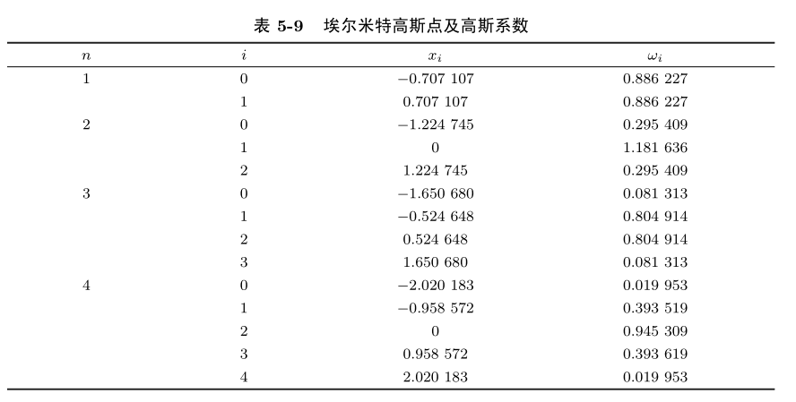
5.2 高斯积分的应用
几种积分的Python实现
def Integ1dGuassLegendre(f, a:float=-1, b:float=1, n:int=5)->float:
"""给定积分区间[a,b]和高斯积分点个数n,计算一维高斯-勒让德积分公式"""
# 计算勒让德-高斯积分点及权重
roots, weights = legendre_gauss_points_and_weights(n)
if a==-1 and b==1:
# 标准型积分
result=sum([wi*f(xi) for xi,wi in zip(roots,weights)])
return result
else:
# 非标准型积分, 需变换积分区间
t= lambda x: 0.5*(b-a)*x+0.5*(b+a)
result=0.5*(b-a)*sum([wi*f(t(xi)) for xi,wi in zip(roots,weights)])
return result
def legendre_gauss_points_and_weights(n:int)->Tuple[List[float],List[float]]:
"""给定高斯点个数n,计算[-1,+1]内的勒让德-高斯积分点及权重"""
import scipy.special as sp
# 计算勒让德多项式的根(即高斯点)
roots, weights = sp.roots_legendre(n)
# sp.roots_legendre函数会返回勒让德多项式的根(即高斯点)及其对应的高斯系数.
return roots, weights
def Integ1dGuassHermite(f,n:int=3,Is_standard:bool=True)->float:
"""给定n(>=1)值,积分范围[-inf,+inf],计算一维高斯-埃尔米特积分"""
# 计算埃尔米特-高斯积分点及权重
if n<=0:
raise ValueError("高斯-埃尔米特积分时,n必须大于0")
print(f"积分点个数: {n+1}, 积分范围: [-inf,+inf]")
roots, weights = gauss_hermite_points_and_weights(n+1)
if Is_standard:
# 为标准型积分
result=sum([wi*f(xi) for xi,wi in zip(roots,weights)])
return result
else:
# 计算 \int_{-inf}^{+inf} g(x) dx
result=sum([wi*np.exp(xi**2)*f(xi) for xi,wi in zip(roots,weights)])
return result
def gauss_hermite_points_and_weights(n:int)->Tuple[List[float],List[float]]:
"""给定高斯点个数n,计算[-inf,+inf]内的埃尔米特-高斯积分点及权重"""
import scipy.special as sp
# 计算埃尔米特多项式的根(即高斯点)及其对应的高斯系数
roots, weights = sp.roots_hermite(n)
return roots, weights- Answer:
f3=lambda x: np.sin(x)/x if x!=0 else 1
from formu_lib import *
# 积分范围
a,b=0,1
# 计算积分
r1=VarStepInteg1d(f3,a,b,1e-7,method=2)
# 使用高斯勒让德方法计算积分
r2=Integ1dGuassLegendre(f3,a,b)
print(f"复化梯形积分:{r1}")
print(f"高斯勒让德积分:{r2}")
showError(r1,0.9460831)
showError(r2,0.9460831)
# 输出:
# 复化梯形积分:0.9460830464324462
# 高斯勒让德积分:0.9460830703672151
# 数值解: 0.9460830464324462, 精确解: 0.9460831, 误差: 5.662034733111406e-08
# 数值解: 0.9460830703672151, 精确解: 0.9460831, 误差: 3.132154553076945e-08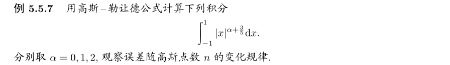
- Answer:
def f4(alpha:int):
return lambda x: abs(x)**(alpha+0.75)
a,b=-1,1
r={}
n=[1,10,50,100,500,1000]
for alpha in [0,1,2]:
re=[]
for ni in n:
re.append(Integ1dGuassLegendre(f4(alpha=alpha),a,b,ni))
r[alpha]=re
from matplotlib import pyplot as plt
for alpha in [0,1,2]:
plt.plot(n,r[alpha],label=f"alpha={alpha}")
plt.xlabel('gauss points number')
plt.ylabel(' Integrate Value')
plt.legend()
plt.show()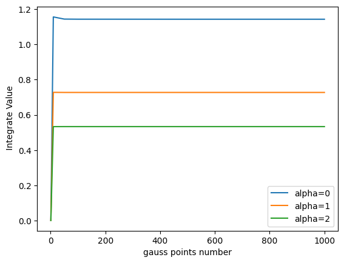
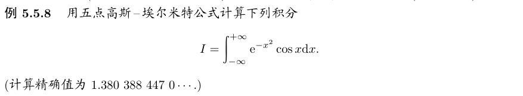
- Answer:
# %%
# 例题5.5.8
from formu_lib import *
f5=lambda x: np.cos(x)
result=Integ1dGuassHermite(f5,5)
showError(result, 1.3803884470)
# 积分点个数: 5, 积分范围: [-inf,+inf]
# 数值解: 1.3803900759356564, 精确解: 1.380388447, 误差: -1.1800559906898897e-06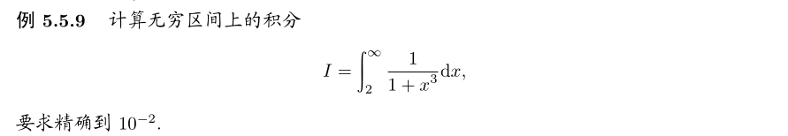
- Answer:
# %%
# 例题5.5.9
from formu_lib import *
g=lambda x: 1/(1+x**3)
n=[1,5,10,50,100]
result=[Integ1dGuassLaguerre(g,ni,beta=0) for ni in n]
print(f"广义积分结果:{result}")
# 广义积分结果:1.1693599387646283
from matplotlib import pyplot as plt
plt.plot(n,result)
plt.xlabel('gauss points number')
plt.ylabel(' Integrate Value')
plt.title('Gauss-Laguerre Integration Value VS Points Number')
plt.show()
# 收敛于1.2091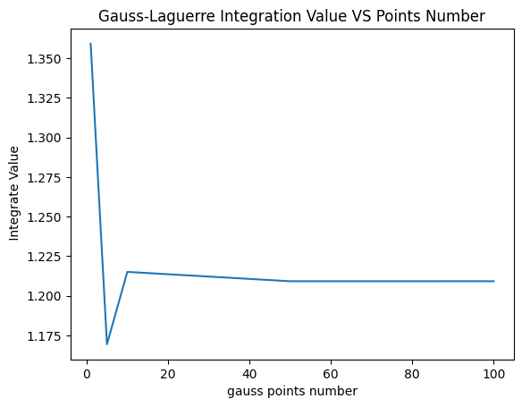
6. 多重积分
本节考虑多重积分的两种计算方法:
- 第一种方法可看成前面几节关于单重积分的推广 ,计算重数较小的积分时有效 .
- 第二种方法称为蒙特卡罗 (Monte Carlo) 方法 , 是一种随机算法 , 处理高维积分时特别有效
6.1 从一重积分推广到二重积分
以二重积分为例,考虑:
其中,
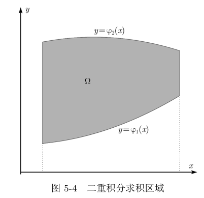
根据二重积分性质:
令:
为了求出
以上就是二重积分的思路.
因此一般来说 , 计算高维数值积分用复合辛普森公式以及前几节介绍的方法都失效.
6.2 蒙特卡罗方法
一般地 , 我们将随机数序列的模拟方法称为蒙特卡罗方法 .
记
可以估计f的方差
then:
这个思路推广到高维积分:
仍可取 N 次独立样本值的算术平均:
作为多重积分 I 的无偏估计量 , 其方差仍为
在实际计算中,
X_i 一般是程序生成的伪随机数, matlab的rand() 可以产生服从均匀分布U(0,1) 的随机数 ( 实际上是伪随机数 ), python的numpy.random.rand() 可以产生服从均匀分布U(0,1) 的随机数.
- 推广到[a,b]的积分范围
那么,如果计算积分:
对应的蒙特卡洛积分为
其中,
- 积分范围推广到[-inf,+inf]的蒙特卡洛方法
积分:
可以看成是服从于正态分布随机变量 X 的函数 h(X) 的数学期望, 通过 N 次独立取样的算术平均近似计算:
可以证明:
资料链接:
编程实现:代码
from typing import Callable,Union,List
def MonteCarloInt2d(f:Callable,x:Union[float,List[float]],
y:Union[float,List[float]],n:int=10000)->float:
"""蒙特卡洛2d积分"""
import random
rseed=random.randint(0,10000)
np.random.seed(rseed)
n=int(n)
low_x,high_x=x
low_y,high_y=y
S=(high_x-low_x)*(high_y-low_y)
# 生成随机浮点数在[low_x,high_x]和[low_y,high_y]之间的坐标
xys=np.random.uniform(low=[low_x,low_y], high=[high_x,high_y], size=(n,2))
return (S/n)*sum([f(xys[ind,0],xys[ind,1]) for ind in range(xys.shape[0])])
def MonteCarloInt2d(f:Callable,x:Union[float,List[float]],
y:Union[float,List[float]],n:int=10000)->float:
"""蒙特卡洛2d积分"""
import random
rseed=random.randint(0,10000)
np.random.seed(rseed)
n=int(n)
low_x,high_x=x
low_y,high_y=y
S=(high_x-low_x)*(high_y-low_y)
# 生成随机浮点数在[low_x,high_x]和[low_y,high_y]之间的坐标
xys=np.random.uniform(low=[low_x,low_y], high=[high_x,high_y], size=(n,2))
return (S/n)*sum([f(xys[ind,0],xys[ind,1]) for ind in range(xys.shape[0])])测试: 1d积分
import scipy
def f(x):
return x**2 + 2*x + 1
a,b=-1,2
v=MonteCarloInt1d(f,a,b,1e6)
print(f"integral of f(-1,2) is {v:.4f}")
scipy_result,error = scipy.integrate.quad(f, a, b)
print(f"SciPy积分结果: {scipy_result},error: {error}")
# <!-- 输出结果 -->
# integral of f(-1,2) is 8.9909
# SciPy积分结果: 9.0,error: 9.992007221626409e-14测试: 2d积分
from scipy.integrate import dblquad
def f(x, y):
return x**2 + y**2
# 使用SciPy计算2d积分
def scipy_integrate_2d(f, a, b, c, d):
result, error = dblquad(f, a, b, lambda x: c, lambda x: d)
return result
a, b = 0, 1
c, d = 0, 1
# 使用蒙特卡洛方法计算2d积分
monte_carlo_result = MonteCarloInt2d(f, [a,b],[ c, d])
print(f"蒙特卡洛2d积分结果: {monte_carlo_result}")
# 使用SciPy计算2d积分
scipy_result = scipy_integrate_2d(f, a, b, c, d)
print(f"SciPy 2d积分结果: {scipy_result}")
# <!-- 输出结果 -->
# 蒙特卡洛2d积分结果: 0.6676998082037032
# SciPy 2d积分结果: 0.6666666666666669数值微分
讨论如下问题:已知函数 f(x) 在离散点处的函数值 f(x i )(i = 1,2,··· ,n), 求 f(x)导数.
介绍两种近似方法:
- 基于拉格朗日插值多项式的求导方法
- 基于样条函数的求导方法
7.基于拉格朗日插值多项式的求导方法
已知
插值余项为:
基于拉格朗日插值的求导方法的缺点是
- 只能求出节点处的导数
- 数据
f(x_j) 有一定误差以及h很小时,数值误差较大,即算法不稳定.- 高次插值会产生龙格现象,因此实际应用中多采用低次拉格朗日插值型求导公式
以下是基于等距节点的低阶求导计算公式
两点公式
作 f(x) 的线性插值公式:
求导后,令
根据公式(10),余项为
略去余项,(11-1),(11-2)称为计算导数的两点公式.分别是向前差商公式和向后差商公式,精度1阶,误差
三点及五点公式
两个公式共同点在于,在一些点处的微分算不出来,微分个数损失
作 f(x) 的二次插值多项式:
令
求导,并令t=0,1,2,得:
以上是带余项的计算导数的三点公式,精度2阶,误差
同理,五点求导公式为:
五点公式一般比三点公式精确 , 三点公式一般比两点公式精确 ;. 但在实际计算中 , 由于数据
f_i 有误差 , 并不是h 越小计算效果越好
8. 基于样条函数的求导方法
本节我们将用样条函数
S(x) 代替拉格朗日插值多项式L_n(x) 作为函数f(x) 的近似.若f(x)\in C^4[a,b], 则有估计:
其中,
此时不但 f(x) 与 S(x) 的函数值很 " 接近 ", 它们的导数值也很 " 接近 "
设
想要求出
- 若
S'(x_0)=f_0'=m_0, S'(x_n)=f_n'=m_n 已知m_i 满足方程组:
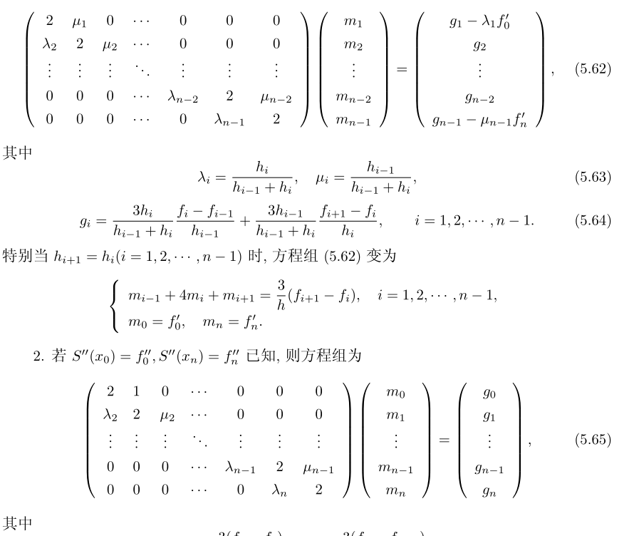
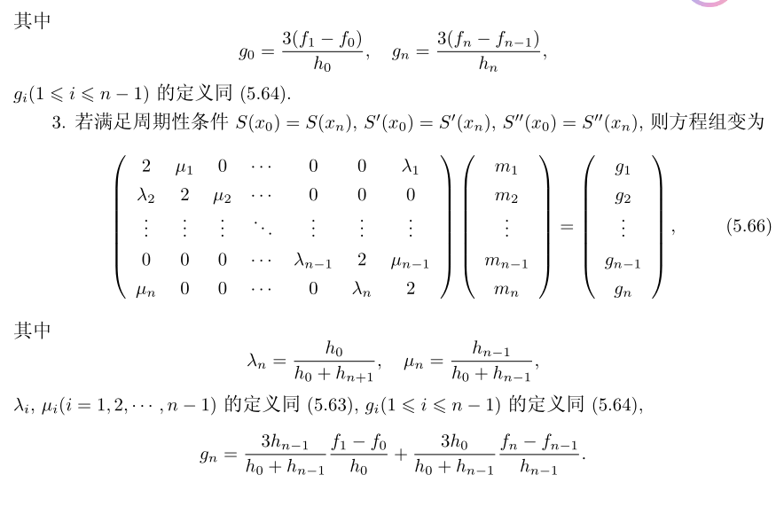
上述方程组 (5.62), (5.65), (5.66) 称为三转角方程组 . 可用追赶法进行求解 . 再将计算结果代入式 (5.61) 中便得 S(x) 以及 S(x) 在任意点 x 处的导数值
由于上述求导数的方法需要求解线性方程组 , 因此也称为隐式格式 . 它具有数值计算稳定的特点 , 可以求出任意点 ( 不一定为节点 ) 的导数值 , 而且精度较高 .
数值实验
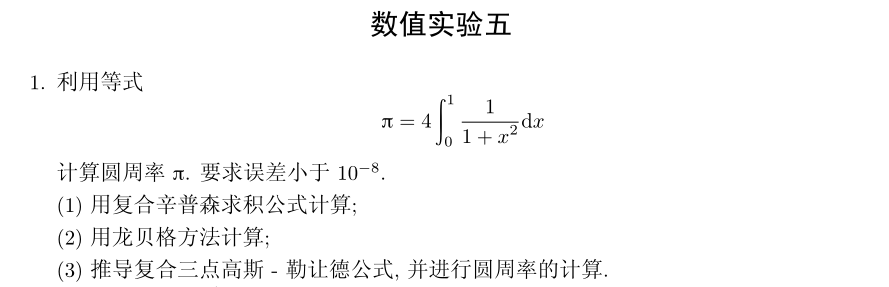
# 数值实验t1
from formu_lib import *
def Com3pGausslengendre(f,a:float,b:float,n:int):
# 复合三点高斯-勒让德计算积分
x=[a+i*(b-a)/n for i in range(n+1)]
return sum([Integ1dGuassLegendre(f,x[i],x[i+1],3)for i in range(n)])
# 积分函数
pi=lambda x: 4/(1+x**2)
# 积分范围
a,b=0,1
# 复合simpson计算积分
r1=VarStepInteg1d(pi,a,b,1e-8,method=3)
r2=Com3pGausslengendre(pi,a,b,100)
showError(r1,np.pi)
showError(r2,np.pi)
# 数值解: 3.1415926535528365, 精确解: 3.141592653589793, 误差: 1.1763670223853885e-11
# 数值解: 3.1415926535897927, 精确解: 3.141592653589793, 误差: 1.4135798584282297e-16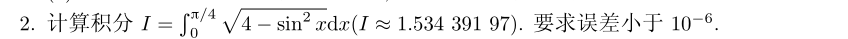
# t2
from formu_lib import *
# 积分函数
f=lambda x: np.sqrt(4-np.sin(x)**2)
a,b=0,np.pi/4
r1=VarStepInteg1d(f,a,b,1e-6,method=3)
showError(r1,1.53439197)
# 数值解: 1.5343920054108953, 精确解: 1.53439197, 误差: -2.3078128678621626e-08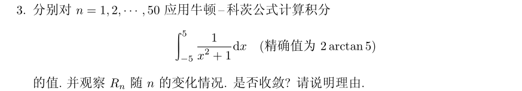
求解代码:
from formu_lib import *
# 积分函数
f8=lambda x: 1/(1+x**2)
a,b=-5,5
result=[]
accurateVal=[]
ns=[]
for n in range(1,51):
result.append(Integ1dNewtonCotes(f8,a,b,n))
ns.append(n)
accurateVal.append(2*np.arctan(5))
from matplotlib import pyplot as plt
plt.plot(ns,result,label='Numerical solution')
plt.plot(ns,accurateVal,label='Accurate solution')
plt.xlabel('Newton-Cotes points number')
plt.ylabel(' Integrate Value')
plt.title('Newton-Cotes Integration Value VS Points Number')
plt.show()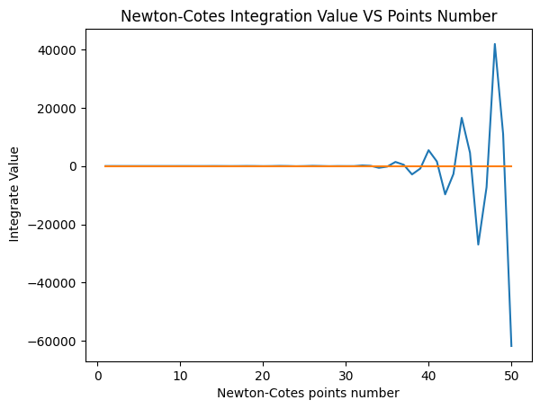
从上图可以看出,当随着n的增加, 牛顿-科特斯积分的逐渐不稳定, 但误差也越来越大.不收敛.
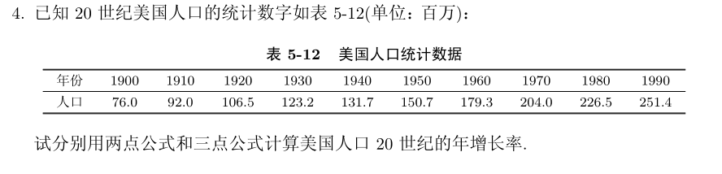
code:
# t4
from formu_lib import *
x=[1900,1910,1920,1930,1940,1950,1960,1970,1980,1990]
fs=[76.0,92.0,106.5,123.2,131.7,150.7,179.3,204.0,226.5,251.4]
df1=diff1dForward(x,fs)
df2=diff1dBackward(x,fs)
df3=diff1dCentral(x,fs)
plotLines([x,x[:],x[:],x],[fs,df1,df2,df3],["Population","Population growth rate-forward","Population growth rate-backward","Population growth rate-center"])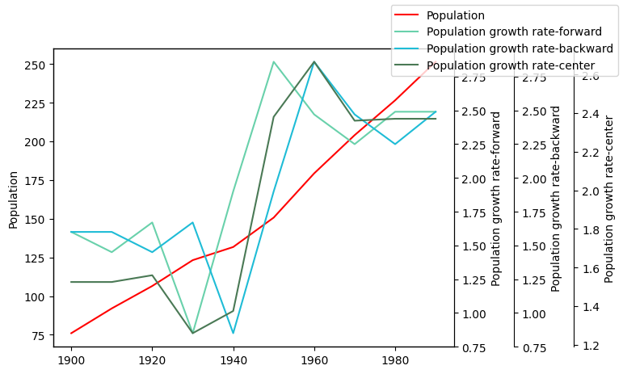
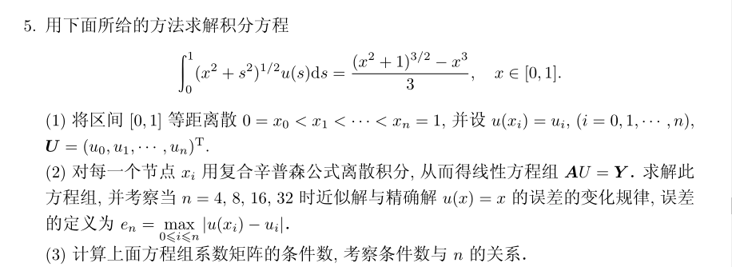
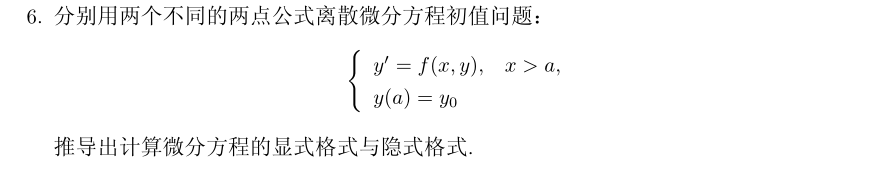
取步长为h,则:
代入方程后:
这是显式格式.
如果使用向后差商公式,则有:
代入方程后:
这是隐式格式
- 验证
取
# t6
from formu_lib import *
import numpy as np
a,b,n=0,5,100
h=(b-a)/n
x=[a+i*h for i in range(n+1)]
f=lambda x: -x*x
# result var
ye,yi=np.zeros(n+1),np.zeros(n+1)
ye[0],yi[0]=1,1
# explicit method
for i in range(n):
ye[i+1]=ye[i]+h*f(ye[i])
# implicit method
for i in range(n):
yi[i+1]=(-1-np.sqrt(1+4*h*yi[i]))/(2*h)
plotLines([x,x],[ye,yi],["y(x)-explictSol","y(x)-implicitSol"])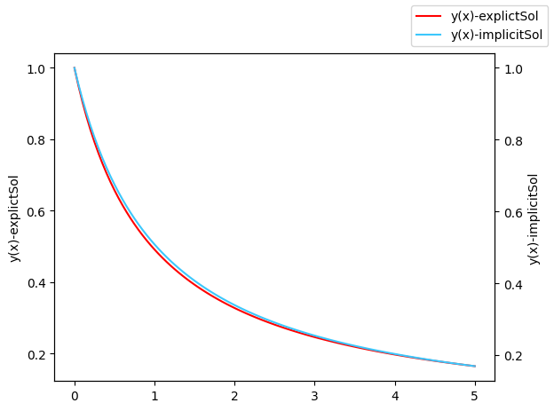
精确结果:
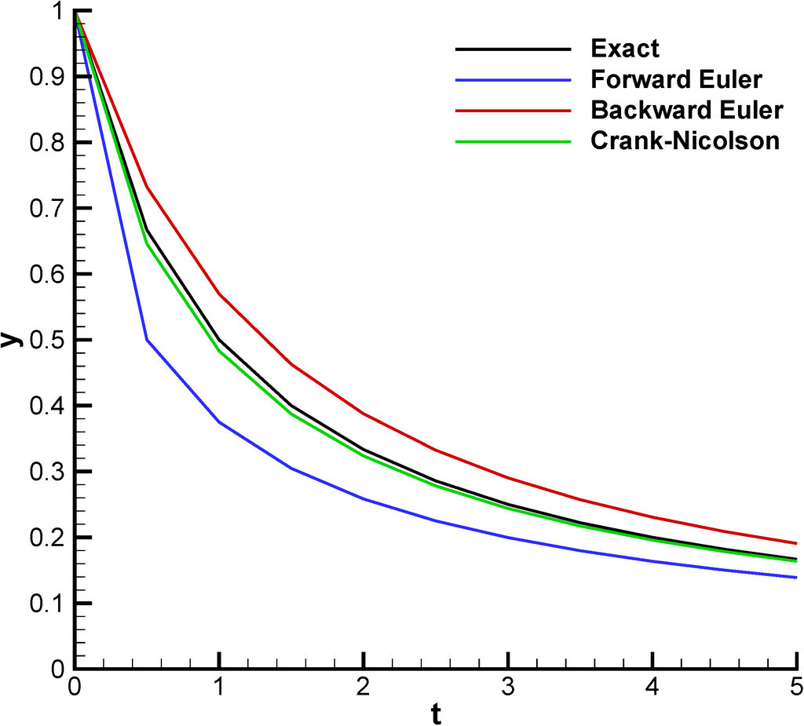
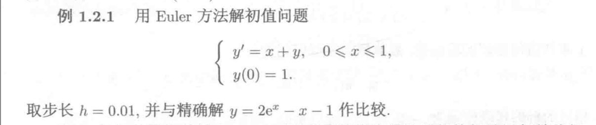
import numpy as np
a,b,n=0,1,100
h=(b-a)/n
x=[a+i*h for i in range(n+1)]
# 计算y'(x)=x+y(x) and y(0)=1 ,0<=x<=1
# 使用向前差商公式离散:y'(x_i)=(y(x_{i+1})-y(x_i))/h
# ==>y(x_{i+1})=(1+h)*y(x_i)+h*x_i
# result var
# explicit method
ye=np.zeros(n+1)
ye[0]=1
for i in range(n):
ye[i+1]=ye[i]*(1+h)+h*x[i]
# implicit method
# yi=np.zeros(n+1)
# yi[0]=1
# for i in range(n):
# yi[i+1]=(-1+np.sqrt(1+4*h*yi[i]))/(2*h)
# extract solution
yex=[2*np.exp(xi)-xi-1 for xi in x]
plotLines([x,x],[ye,yex],["y(x)-explictSol","y(x)-ExtractSol"])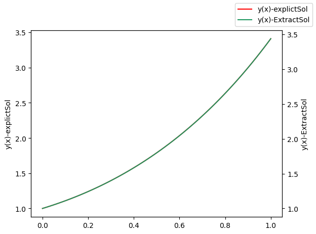